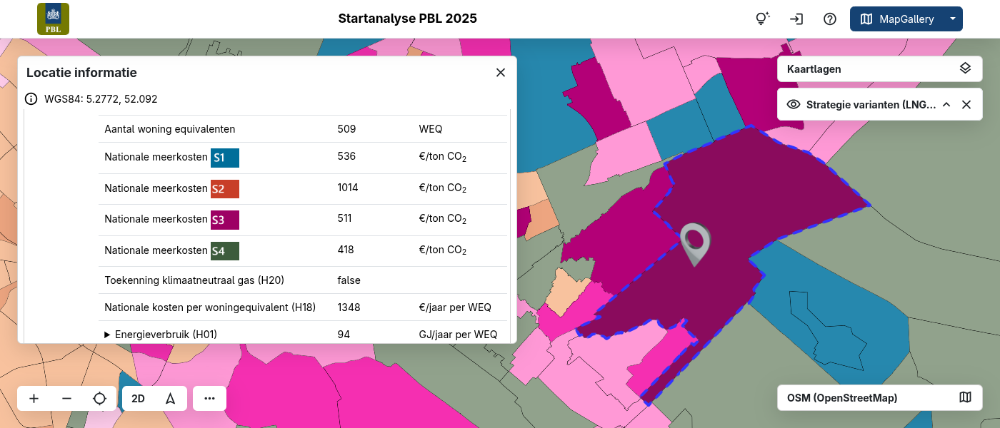

Startanalyse aardgasvrije buurten 2025
Visualisatie & inzicht in de warmte-opgave voor gemeenten
Gemeenten in Nederland staan voor de opgave om uiterlijk eind 2026 een warmteprogramma op te stellen voor hun transitie-van-het-aardgasnetwerk. Het PBL ontwikkelde de Startanalyse aardgasvrije buurten 2025 (ASA2025) als instrument om inzicht te geven in de nationale meerkosten, energieverbruiken en CO₂-reductie van verschillende technische warmtestrategieën op buurt- of gebouwniveau.
De uitdaging was: hoe maak je deze uitgebreide datasets en analyses voor alle 14.000 buurten in Nederland op een toegankelijke, visuele en interactieve manier bruikbaar voor beleidsmakers, planologen en gemeenten?
MapGallery als kaart-viewer van de Startanalyse
Met MapGallery is een interactieve kaartviewer gerealiseerd waarin de ASA2025-data visueel ontsloten worden. Gemeenten kunnen via de kaart laag voor laag bekijken:
Welke warmtestrategie in een buurt de laagste nationale kosten heeft;
- De variantopties per strategie;
- Technische indicatoren zoals isolatiekwaliteit, energieverbruik, beschikbaarheid van warmtebron of netwerken;
- Downloadbare tabellen en gemeentedata voor lokaal gebruik.
Dankzij MapGallery kunnen gemeenten eenvoudig inzoomen op hun eigen gebied of buurt, scenario’s vergelijken, en de data verrijken met lokale informatie. Zo wordt de grote dataset actief inzetbaar in de gebiedsgerichte planning.

Het resultaat
Toegankelijkheid & gebruiksgemak: In plaats van complexe tabellen of rapporten, biedt de kaartomgeving een intuïtieve interface voor beleidsmedewerkers, planologen én bewoners.
Onderbouwde gebiedsgerichte keuzes: Gemeenten kunnen op basis van de kaartviewer sneller zien welke buurten kansrijk zijn voor welk type warmtestrategie zoals bijvoorbeeld warmtenet, all-electric of hybride warmtepomp.
Efficiëntie in communicatie: De visuele kaart maakt het makkelijker om stakeholders, bewoners en gemeenteraad te betrekken bij de warmtetransitie.
Schaalbaarheid & consistentie: De tool bedient alle gemeenten in Nederland met dezelfde dataset en structuur — wat zorgt voor uniformiteit in de analysebasis.
MapGallery biedt krachtige ondersteuning voor grote geodatabestanden en complexe kaartlagen, waardoor analyses op nationaal, regionaal en wijkniveau moeiteloos kunnen worden uitgevoerd. Dankzij de intuïtieve kaartinterface wordt de informatie direct inzichtelijk, óók voor gebruikers zonder GIS-achtergrond. Bovendien laat het platform zich eenvoudig uitbreiden met lokaal verrijkte data en externe databronnen. De snelle implementatie maakte het mogelijk om het instrument tijdig beschikbaar te stellen aan gemeenten.